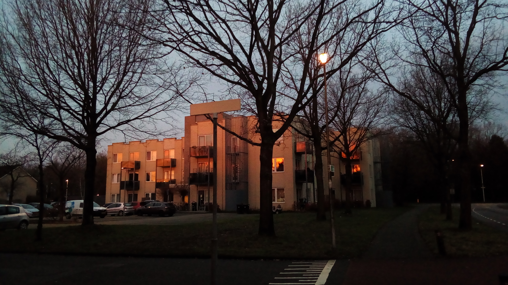

Over ons
Gemengd Wonen Project
Woongoed Zeist heeft samen met De Tussenvoorziening en de gemeente Zeist het gemengd woonproject Seyster Veste opgezet. Seyster Veste bestaat uit 32 woningen aan de Zeisteroever in Zeist. De helft van de bewoners bestaat uit mensen die begeleiding krijgen van De Tussenvoorziening, bijvoorbeeld omdat zij dakloos zijn geweest. De andere helft zijn ‘reguliere’ huurders die houden van sociale activiteiten en het zijn van een goede buur.
Begin 2020 zijn de eerste bewoners ingetrokken en kon het project van start gaan. Helaas viel de start van het woonproject samen met het coronavirus, waardoor de vereniging een aangepaste start moest maken. Ondertussen zijn er al veel activiteiten geweest (zie ook de nieuwsbrieven) en is er veel contact tussen de bewoners.
De vereniging bestaat uit een bestuur en 2 commissies; de toelatingscommissie en de activiteitencommissie. Zij werken samen aan het doel van de vereniging: het scheppen van een voor haar leden prettig leefmilieu. Dit betekent onder andere; het bevorderen van onderlinge samenhang en sociale cohesie tussen de bewoners, het bijdragen aan de realisatie van een groene buurt, het behartigen van de belangen van de leden en natuurlijk het gezellig hebben met z’n allen.
Onze slogan is dan ook: ‘Beter een goede buur, dan een verre vriend’.
Bestuur
 Het bestuur bestaat uit de voorzitter, secretaris, penningmeester en algemeen bestuursleden.
Het bestuur is er als overkoepelend orgaan om de afgesproken lijn van de woonvereniging vast te houden.
Er zijn een aantal vaste taken die het bestuur heeft, waaronder een begroting van de vereniging opstellen, het beheer van de financiën, contact met externe partijen en voorbereiding voor de algemene ledenvergaderingen.
Samen met de andere commissies zorgen zij voor ondersteuning en een prettige woonsfeer voor alle bewoners.
Het bestuur bestaat uit de voorzitter, secretaris, penningmeester en algemeen bestuursleden.
Het bestuur is er als overkoepelend orgaan om de afgesproken lijn van de woonvereniging vast te houden.
Er zijn een aantal vaste taken die het bestuur heeft, waaronder een begroting van de vereniging opstellen, het beheer van de financiën, contact met externe partijen en voorbereiding voor de algemene ledenvergaderingen.
Samen met de andere commissies zorgen zij voor ondersteuning en een prettige woonsfeer voor alle bewoners.
Activiteitencommissie
 De activiteitencommissie organiseert activiteiten voor het hele gebouw zoals barbecues, bowlen, etentjes, andere festiviteiten en meer.
Samen met iedereen in de commissie denken we na over nieuwe activiteiten en organiseren we deze aan de hand van inschrijflijsten.
Maar mochten de andere bewoners ook ideeën hebben, kan dit natuurlijk in de groep worden gegooid.
Ook hebben we een opslag met spullen die we allemaal mogen gebruiken zoals voetballen, schilderspullen en een tafeltennistafel.
De activiteitencommissie organiseert activiteiten voor het hele gebouw zoals barbecues, bowlen, etentjes, andere festiviteiten en meer.
Samen met iedereen in de commissie denken we na over nieuwe activiteiten en organiseren we deze aan de hand van inschrijflijsten.
Maar mochten de andere bewoners ook ideeën hebben, kan dit natuurlijk in de groep worden gegooid.
Ook hebben we een opslag met spullen die we allemaal mogen gebruiken zoals voetballen, schilderspullen en een tafeltennistafel.
Toelatingscommissie
De toelatingscommissie houdt zich bezig met het werven en het beheren van aspirant-bewoners.
Dit betekent dat wij het proces begeleiden van het werven van nieuwe bewoners, hun plaatsen op de wachtlijst en toelatingsgesprekken houden zodra er een woning vrijkomt.
Eenmaal na de gesprekken wordt er een keuze gemaakt voor de nieuwe bewoner en zullen wij de nieuwe bewoner verwelkomen.
Naast deze procedure verzorgt de toelatingscommissie ook de interne communicatie - in een vorm van een nieuwsbrief, het proces van intern doorverhuizen, en het voeren van evaluatiegesprekken met alle bewoners.
Verder regelen we ook de kaartjes en de cadeautjes.
Dit om de betrokkenheid bij de bewoners te vergroten.